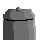

Une création d'un stagiaire, axel
Le top ULTIME : Les objets les plus UTILES dans une CHAMBRE
Bonjour, bonsoir à tous. Vous avez cliqué sur ce top ? Parfait ! Aujourd'hui, nous allons explorer les objets les plus impotants qu'une chambre peut accepter dans une chambre. En effet, votre chambre est trop petite, vous avez pas d'argent ou juste super radin ? Peut-être êtes vous minimaliste et vous avez besoin d'aide sur les objets à choisir ? Pas de panique. Votre humble serviteur est de retour pour rétablir la vérité sur ce sujet ô combien important.
Les cinq objets les plus UTILES dans une chambre
| Rang | Objet | Commentaire |
|---|---|---|
| 05 |
Un Ordinateur (fixe ou portable peu important)
|
Eh oui, on a bien réfléchi à la rédaction de cet article et le moins utile des objets les plus utiles est bel et bien l'ordinateur. Il est essentiel dans la vie de tous les jours en france, au vu du grand nombre de choses à réaliser numériquement. Il peut cependant aussi être disposé dans une autre pièce comme un salon. |
| 04 |
Un Bureau
|
Un bureau ? Pour travailler, écrire, poser des affaires ou ranger des objets. Même sans le bureau, il est toujours utile de se poser à son bureau pour une zone plus confortable et studieuse que le reste |
| 03 |
Une lampe de chevet
|
Après avoir fait la partie travail et responsabilité, il est temps de se recentrer sur la fonction principale d'une chambre : le REPOS. Une lampe peut importe sa forme est toujours utile pour pouvoir lire le soir dans de bonnes conditions avant de dormir. Nous noterons ainsi que lors de votre choix de votre lampe de chevet, prenez soin d'en prendre une qui peut se passer de table de chevet (ou pas si vous avez une table de chevet qui peut l'accueillir), vous éviterez des frais supplémentaires et un inconfort certain. |
| 02 |
 Une Poubelle
|
L'heureuse élue pour la médaille d'argent, pour la deuxième place, j'ai nommé la POUBEEEEELLE ! Cela peut sembler étonnant, mais une fois qu'on a essayer cela, revenir en arrière n'est plus envisageable. Dans une chambre les enrhumés comprendrons et les dessinateurs aussi quand ils utilisent de la gomme. Dans sa chambre en déballant un colis ou en découpant du papier, du cartons ou des bouts de scotch, une poubelle est toujours la bienvenue pour ranger un peu ou nettoyer rapidement. |
| 01 |
Un Lit
|
Ai-je réellement besoin d'expliquer l'IMPORTANCE d'un lit, je suppose que oui si ce top existe. Le lit permet une réalisation parfaite de la mission première d'une chambre : se reposer. C'est donc tout naturel que nous décernons la médaille d'or à cet objet. Pour les minimalistes qui me lisent, pensez simplement qu'un lit peut prendre plusieurs formes. En effet, il n'est pas nécessaire d'avoir d'armature pour soutenir un matelas, la couette étant aussi important si on veut un sommeil et un repos de qualité. |